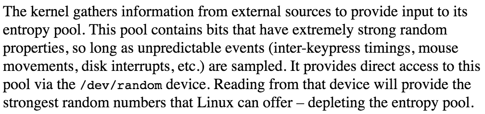
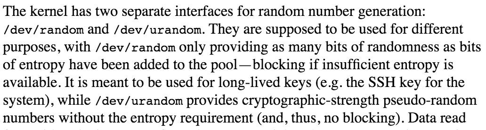

Криптография,
карго-культ
и крафтовая энтропия
Дмитрий Грошев

О чём этот доклад
- Непонимание механизмов порождает мифы
- «Для Настоящей Криптографии™ нужен Настоящий Рандом™»
- «/dev/urandom – не кошерно, нужна Физическая Энтропия™»
- Утверждения в кавычках – ерунда
Не только твоя мама
https://lwn.net/Articles/261804/
Разработчики ядра Linux также верят в это
Не только твоя мама 2
https://lwn.net/Articles/586427/
Пресвятой Господь, это же ЯДРО, они точно что-то знают!
План
- На каких китах стоит криптография
- AES-CTR
- [Тривиальный вывод]
Шифр Цезаря, Enigma, …
…
Шутка. К чертям это старьё
Пожалуй, главный кит
(начиная примерно с WW2)
- «Выглядит надёжно» => доказательства
- One-time pad
- "One-time pads are "information-theoretically secure" in that the encrypted message (i.e., the ciphertext) provides no information about the original message to a cryptanalyst (except the maximum possible length of the message)." – wiki
Заметки на полях:
- Существуют разные классы «доказанной безопасности» – IND-CCA, IND-CPA, semantically secure, information-theoretically secure, …
- Девелоперы Телеграма очень плохи, не будьте, как они!
Проблемы с шифрблокнотом
- Длина «ключа» равна длине сообщения
- Пичалька :(((
- Можем ли мы лучше?
- Дааа! Но нужно больше слов
Криптографические примитивы
Разные уровни:
- RF/PRF/PRP/…
- AES/ChaCha/…
- Построение
- Библиотека/бинарник/…
RF = Random Function,
PRF = PseudoRandom Function,
PRP = PseudoRandom Permutation
Hun… Oracle games
Строго говоря, PRF != RF, но полагаются неотличимыми
------- x -------------
| | <---------- | |
| ??? | f(x) | Adversary | =======> f = RF? f = PRF?
| | ----------> | |
------- -------------
Подводный камень: PRP != PRF
(перестановка != функция,
суръекция != биекция)
AES
- f[key](x128bits) => y128bits, f биективна
- Больше ничего знать не надо (почти)
- Не очень полезно
Построение
- Как превратить 128 бит в миллиард гигабайт?
- AES-CBC, AES-CTR, …
- Требуется доказательство!
AES-CTR
- Классный! Надёжный, параллельный, можно искать
- Подводный камень: уникальность nonce
- Практически one-time pad при условии неотличимости шифртекста от случайного текста
AES-CTR, ещё раз
- Базируется на верности того, что:
- AES это PRP
- PRP ~ PRF
- PRF ~ RF
- Генератор истинных случайных чисел это RF
AES-CTR и /dev/urandom
- /dev/urandom генерирует последовательность псевдослучайных бит из «настоящей энтропии»
- AES-CTR генерирует последовательность псевдослучайных бит из ключа и входа
- Найдите три отличия!
AES-CTR и /dev/urandom
- Если AES[key](nonce|counter) отличим от истинно случайной последовательности, AES-CTR небезопасен
- 128 бит «настоящей энтропии» и персистентного счётчика должно быть достаточно для каждого!
Дима, но как же rekeying?!
- Возможно, вы слышали, что ключи стоит менять
- AES ~ PRP, PRP != PRF, это «становится заметно» после примерно 264 блоков
- 264 блоков > 250 миллионов ТБ
- Сломанное доказательство != практическая атака
- Даже если вы столько шифруете, /dev/urandom «сменит ключ» гораздо, гораздо раньше
Резюме
- Смело используйте /dev/urandom!
- Избегайте карго-безопасности
- Будьте няшами
Спасибо за внимание!